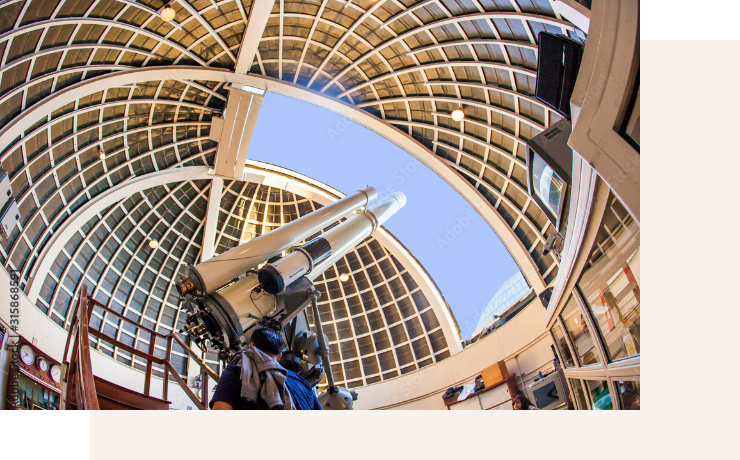
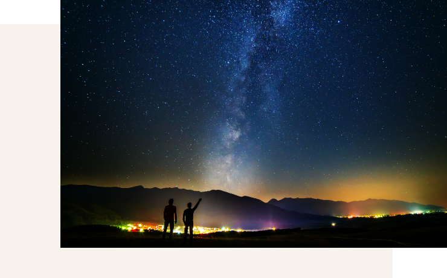

STARGAZING
星を見る
南阿蘇の星空に癒される
阿蘇くじゅう国立公園の中、毎晩開催されるプレミアム星空体験ツアー。
高精細の4Kプラネタリウム、高さ６ｍの巨大望遠鏡をそなえた本格的な天文台、星空を見るための草原... 。
すべてツアー参加者の専用なので、余裕を持ってお楽しみいただけます。
天文学やサイエンスコミュニケーションなど様々な専門知識を身につけたプロのご案内を、
少人数グループでごご堪能ください。
TOUR GUIDE-ツアーの紹介-
プレミアム星空体験ツアー
九州一の望遠鏡と最新式のデジタルプラネタリウム、どちらもお楽しみいただけます。
「星のコンシェルジュ」の生解説を交えたプログラムでお客様を星空ロマンの旅へとお連れします。
ツアー時間は約60分から70分です。
※開始時刻は日によって異なります。チェックイン時、ご予約時にお問い合わせ下さい。


究極の体験〜星見ヶ原
晴れた夜には天の川も見える「星見ケ原」へ。無料貸し出しのアウトドアベッドに寝そべって満天の星空を楽しめます。ホテルの敷地内なので、安全に心ゆくまで星空を眺めることができます。
時間は30分からお好みです。
※晴天時のみの開催です。雨天時は中止となります。
PARTICIPATION-参加方法-
ご宿泊の方へ
Hotel guest
「星空体験ツアー」付きのプランでご宿泊になった場合、すべての星空体験が可能です。
外来の方へ
From abroad
すべての体験は要予約で、当日の13時より承ります。（当日予約のみ、前日以前の予約不可）
【ご予約はお電話で承ります】南阿蘇ルナ天文台 TEL:0967-62-3006
プレミアム星空体験ツアー通常料金
| 大人（中学生以上） | ￥5,000 |
|---|---|
| 小学生 | ￥3,500 |
| 未就学児（4歳以上） | ￥1,000 |
- ツアーご参加の方は、星見ヶ原へは晴天時は無料でご案内します。
- 星見ヶ原単体の外来利用は受け付けておりません
プレミアム星空体験ツアー通常料金
| ファミリーパック 大人2名子供2名 |
￥12,000 |
|---|---|
| 2名パック 大人2名 |
￥9,000 |
| グループパック3名以上 | 1名につき￥4,000 |